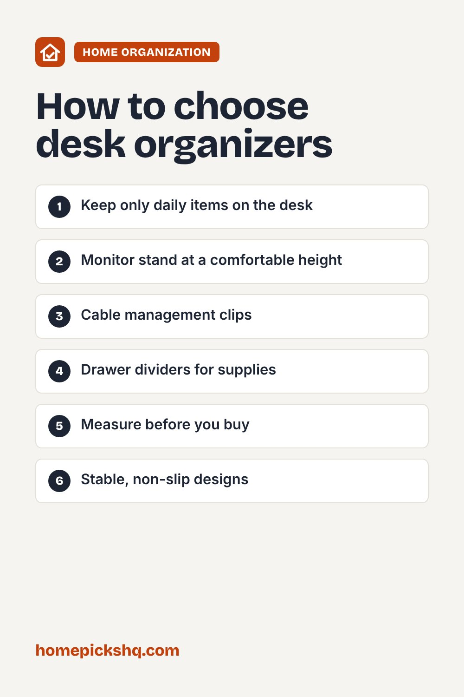

Best Desk Organizers: Build a Cleaner, More Productive Workspace

How we write these guides: we research manufacturer specifications, expert guidance, and owner feedback. We do not claim to have lab-tested every product. If product links are added, some may be affiliate links; see our disclosure.
A cluttered desk makes it harder to focus. A few well-chosen organizers can keep daily tools within reach and clear space for actual work. Whether you work from home or study, here is how to pick organizers that fit.
Start with what you use
Remove everything from your desk and put back only what you use daily, such as a keyboard, mouse, notebook, and a few pens. Store occasional items in drawers or shelves. Organizers work best when they hold only what you need.
Types of organizers
Desktop trays hold pens, sticky notes, and small tools. Vertical file holders store papers and notebooks without taking up flat space. Drawer organizers divide supplies inside drawers. Monitor stands raise your screen and create storage space beneath. Cable clips and sleeves keep cords tidy.
Ergonomics
A monitor stand can help bring the screen to a comfortable height. A common guideline is to place the top of the screen at or slightly below eye level and about an arm's length away. Keep frequently used items close so you do not have to stretch.
Size and stability
Measure your desk before you buy so an organizer does not crowd your workspace. Choose stable, non-slip designs, especially for monitor stands that hold heavy screens. Check the weight capacity.
Style and materials
Wood, metal, and mesh organizers all work. Pick a style that suits your space, and try to stick to a matching set so the desk looks calm and uncluttered.
Quick buying checklist
- Keep only daily items on the desk
- Monitor stand at a comfortable height
- Cable management clips
- Drawer dividers for supplies
- Measure before you buy
- Stable, non-slip designs

Frequently asked questions
How do I keep my desk clean?
Spend a few minutes at the end of each day returning items to their places.
Do I need a monitor stand?
It is helpful if your screen is too low, especially with a laptop.
What is the best way to hide cables?
Use cable clips, sleeves, or a cable tray under the desk.